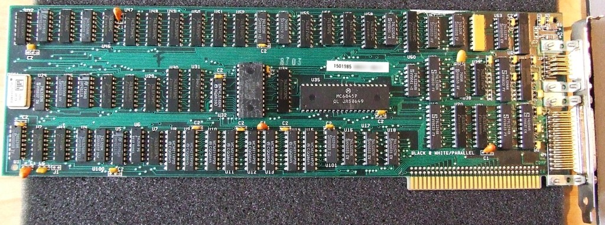

La historia de las tarjetas gráficas comienza a finales de los años 60, cuando se deja de utilizar impresoras como principal elemento de visualización y entran en juego los monitores. Las primeras tarjetas gráficas solo eran capaces de mostrar una resolución de 40 x 25 píxeles monocromo, hasta que aparecieron los primeros chips gráficos dedicados como el Motorola 6845.

Más tarde comenzaron a aparecer las primeras videoconsolas
y el éxito del PC (Personal Computer, ordenador doméstico)
tuvo un gran auge, abaratando mucho los costes de producción
dado que se hacían ya en masa. Al principio las tarjetas
gráficas que se comercializaban eran de 80 columnas, que añadían
un modo texto de hasta 80 x 25 caracteres (no píxeles),
principalmente para software CP/M. Después, llegaron los
famosos IBM PC que popularizaron el diseño “intercambiable”
de las tarjetas gráficas. La más extendida fue la MDA
(Monochrome Display Adapter) que IBM creó en 1981. Ésta
gráfica contaba con una memoria gráfica de 4 KB y era capaz de
representar en el monitor hasta 25 líneas de texto de
80 caracteres cada una.
A partir de ahí se entró en un
ciclo de competencia en el mercado de PC, con
nombres que os sonarán mucho tales como Commodore,
Amiga 2000 y Apple Macintosh. Éstos equipos comenzaron
a utilizar tecnología propietaria para la tarjeta
gráfica, integrando la GPU en la placa base. Esta
situación se mantiene hasta la aparición de otro
integrante que también os sonará: el puerto PCI.
El PCI eliminaba el cuello de botella de la
interfaz anterior (ISA), y comenzaron a desarrollarse
los primeros adaptadores 3D profesionales (S3 ViRGE).
Se comenzó a la fabricación masiva de gráficas para
zócalos PCI. A partir de ahí, la industria evolucionó
hasta como la conocemos hoy en día, con los siguientes
hitos destacados:
En 1995 aparecieron las primeras tarjetas gráficas 2D/3D
fabricadas por Matrox, ATI, S3 y Creative entre otros. Cumplían
con el estándar SVGA pero con funciones 3D.
En el año 1997, 3DFX lanzó el que posiblemente sea el chip
gráfico más famoso de todos los tiempos: Voodoo. Éste tenía una
potencia de cálculo ingente para la época y añadía diversos
efectos 3D como Mip Mapping, Z-Buffering y Antialiasing. A
partir de ésta, se lanzaron diversos modelos conocidos como
el Voodoo2 de 3DFX, TNT de Riva y después, el TNT2 de NVIDIA
(después de adquirir Riva).
Tal era la potencia de esas gráficas que el puerto PCI se
quedó corto, pero llegó Intel para desarrollar el puerto AGP
(Accelerated Graphics Port) que solucionó los cuellos de botella
que ya había en ese entonces.
Entre 1999 y 2002, NVIDIA se hizo con la hegemonía del
mercado de tarjetas gráficas (entre otras cosas compró 3DFX)
con su familia GeForce. En ese periodo hubo gran cantidad de
mejoras gráficas en el entorno 3D. Las gráficas destacadas de
aquellos tiempos tenían hasta 128 MB de memoria DDR.
En 2006 AMD compra ATI, y se hace rival directo de NVIDIA
en el mercado de tarjetas gráficas. Desde entonces se
repartieron el liderazgo con sus respectivas familias GeForce
y Radeon, y así siguen hasta el día de hoy.